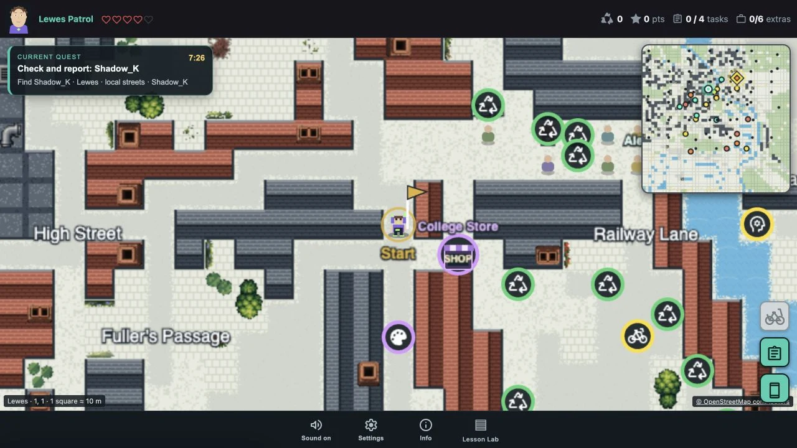

01 / A world they recogniseFamiliar streets.
Familiar streets.
New conversations.
What started as an idea for a walk around Brighton, talking to non-player characters (NPCs), grew into a game taking in all the East Sussex College Group sites.
The Brighton setting shifted to the MET. Many of my students progress there, and I’d already built the maps, so it made sense to keep it in the world. Familiar places gave students a reason to explore and someone to talk to along the way.